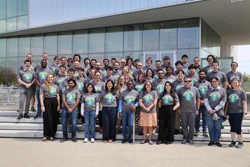

This April, researchers, technologists, conservationists, and students gathered for the first-ever Imageomics Conference, hosted at the Energy Advancement & Innovation Center at The Ohio State University. The multi-day event brought together experts across artificial intelligence, ecology, biodiversity science, computer vision, and data science to explore how images and machine learning can transform the way we understand life on Earth.
The conference began on Tuesday, April 14, with pre-conference activities focused on collaboration and community-building within the imageomics ecosystem. The day featured the “NextGen Day” program for students and postdoctoral researchers, alongside a field excursion to The Wilds for current and former Imageomics researchers. By bringing together early-career researchers, faculty, developers, and field scientists, the conference created opportunities for mentorship, networking, and future collaborations.
Wednesday’s “Big Ideas Lab” focused on visionary thinking and the future of imageomics research. Lightning talks showcased projects involving biodiversity monitoring, AI-ready ecological infrastructure, machine learning applications in regenerative agriculture, and edge AI sensing systems. Discussions throughout the day emphasized open science, reusable research tools, and scalable systems that make biodiversity data more accessible worldwide.
A major highlight was the panel discussion, “Imageomics on the Horizon: Mapping the Next Decade of Discovery,” moderated by Tanya Berger-Wolf. The panel explored the future of AI in conservation, scientific collaboration, and community-driven research, bringing together leaders from institutions including NEON, Virginia Tech, Boston University, and the University of Maine.
Thursday’s programming centered on technical innovation under the theme “Build. Code. Discover.” Through breakout sessions, demonstrations, and interactive labs, participants explored emerging imageomics tools and workflows. Rather than focusing only on theory, the conference emphasized practical application, encouraging researchers to experiment with machine learning models, image analysis pipelines, and open-source technologies designed for biodiversity science.
The conference concluded Friday with a workshop titled “Designing for Discovery: Shaping Imageomics Tools for Biologists.” Participants worked directly with open-source imageomics tools to evaluate usability, identify barriers to adoption, and explore new scientific applications. The workshop reinforced one of the conference’s biggest themes: successful scientific AI depends on collaboration between developers and biologists to ensure tools are both powerful and accessible.
More than a traditional academic gathering, the first Imageomics Conference showcased how AI, ecology, and biodiversity science are converging to address global environmental challenges. From conservation technology to interdisciplinary education and open-source infrastructure, the event demonstrated the growing impact of imageomics on both science and society while fostering a collaborative community dedicated to shaping the future of biodiversity research.